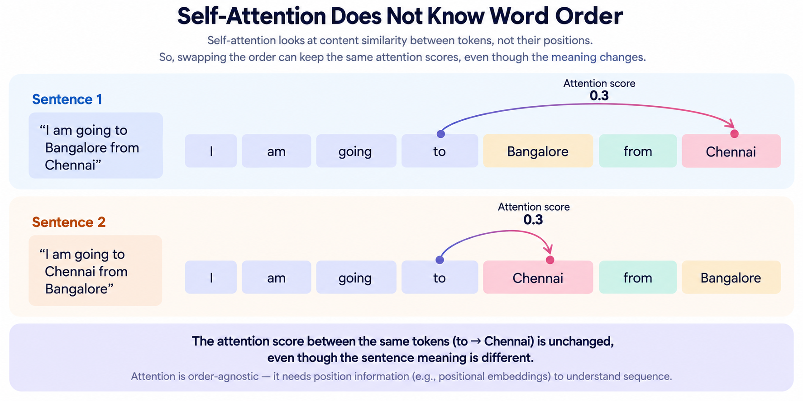
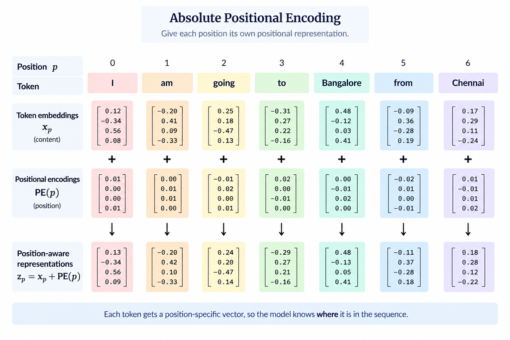
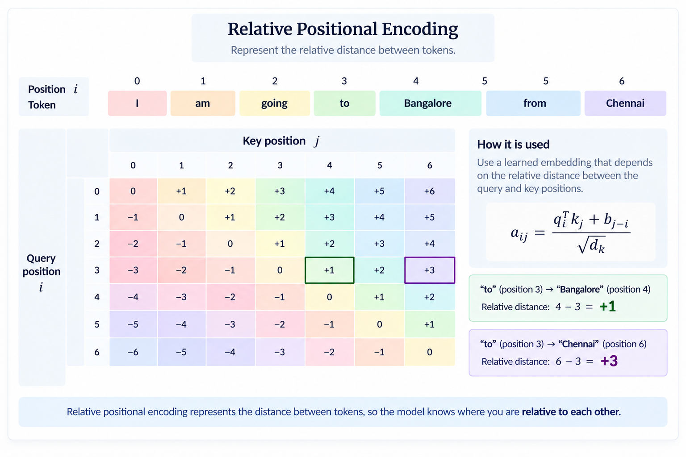
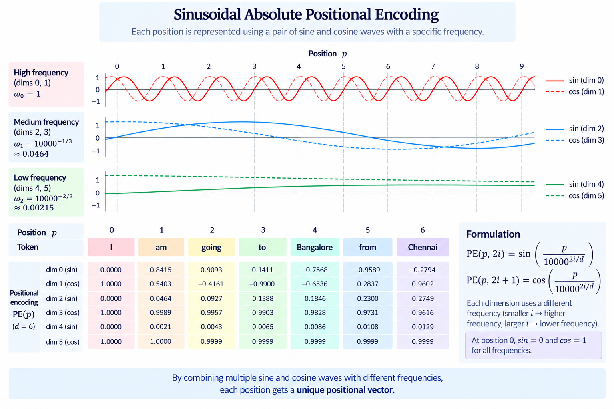

How does a Transformer
know where a token is?
From absolute positions to relative ones — and finally, a RoPE to hold onto.
Attention doesn't know where you are.
Start with self-attention itself.
When the order of the input tokens is changed, the pairwise attention scores remain the same. The model still measures the same relationships between the tokens, regardless of where they appear in the sequence.
So how do we break this invariance and tell the model where each token occurs?

Break the attention invariance with position information.
There are two broad philosophies.
Where am I?
Give each position its own positional representation.
Where are you relative to me?
Encode information about the displacement between two positions.


Let's first see how far absolute position can take us.
What if we simply learn a vector for every position?
The simplest idea is to associate each position with a learned embedding.
The positional representation can then be added to the token representation:
The model can therefore distinguish a token appearing at one position from the same token appearing at another.
But what happens when we encounter a position that was never present during training?
What if positions didn't have to be learned?
Instead of learning an arbitrary vector for every position, we can construct the positional representation using deterministic functions.
The original Transformer uses sine and cosine functions with different frequencies.
Each pair of dimensions therefore behaves like a small two-dimensional coordinate system with its own frequency.

But why use both sine and cosine?
Can we move from one position to another?
Consider one sine/cosine pair with frequency \(\omega\):
Now move from position \(p\) to position \(p+k\).
where \(R_i(k)\) is a rotation matrix whose angle depends on the displacement \(k\).
So the positional representation at \(p+k\) can be obtained from the representation at \(p\) through a transformation determined only by the offset \(k\).
Every sine/cosine pair has its own frequency, and therefore its own rotation. The important point is that the transformation depends on the relative displacement \(k\), not on the absolute position \(p\).
The structure exists — but can the model actually learn to use it?
Does this mean sinusoidal position embeddings automatically solve unseen context lengths?
Can we generate positions we never saw?
A deterministic positional function can be evaluated at positions beyond those explicitly encountered during training.
In that sense, sinusoidal embeddings can construct representations for unseen positions.
can be computed even if training never contained that particular position.
But generating an unseen position is not the same thing as generalising to an unseen context length.
Position extrapolation isn't context extrapolation.
A positional function may happily produce a representation for a new position.
But the Transformer as a whole has been trained on a particular distribution of sequence lengths and positional relationships.
Moving to substantially longer contexts can therefore introduce a distribution shift in how attention operates.
Going back to - "The structure exists — but can the model actually learn to use it?" Maybe not.
What if attention only needs relative position?
Imagine shifting an entire sequence by the same amount.
The absolute coordinates have changed.
But the relationship between the tokens has not.
If positional information depends only on \(j-i\), shifting every position by the same amount leaves the relationship unchanged.
This gives us the intuition of translation invariance.
Relative position does not ask "where am I?" It asks "how far are you from me?"
What if relative position becomes part of attention?
Shaw et al. introduced a relative-position formulation in which learned representations associated with relative displacement can influence attention.
For a query at position \(i\) attending to a key at position \(j\), we can think of the relative position as:
Relative position can affect the attention score through the key side:
But Shaw's formulation also allows relative-position representations to influence the values being aggregated:
This gives relative position two roles:
But can we make the separation between content and position even cleaner?
Transformer-XL Attention
Relative position gives us a more natural way to describe the relationship between a query position \(i\) and a key position \(j\): their displacement \(i-j\).
Transformer-XL takes this idea further by decomposing the attention score into four different interactions:
Content-to-content interaction
This is the familiar attention interaction.
The query at position \(i\) asks:
The query \(q_i\) represents what the current token is looking for, while \(k_j\) represents what the token at position \(j\) offers.
Their dot product measures how compatible those two pieces of content are.
Content interacting with relative position
Now the query does not interact with the content of the key. Instead, it interacts with the relative position between the two tokens.
Here \(p_{ij}\) represents the relative displacement between positions \(i\) and \(j\).
This allows different queries to have different preferences for different relative positions.
Global content bias
This term removes the current query from the interaction.
\(u\) is a learned global vector. Its interaction with \(k_j\) gives the model a content preference that does not depend on the particular query at position \(i\).
So the model can learn that certain types of content are generally worth attending to, independently of the current query.
Global positional bias
Finally, neither the query content nor the key content appears in this term.
The learned vector \(v\) interacts with the relative-position representation \(p_{ij}\).
This allows the model to learn general preferences for relative positions, independently of the particular content being processed.
Four questions. One attention score.
The important conceptual move is that Transformer-XL separates content interactions from relative positional interactions, while also allowing global preferences for each.
Can relative position be made simpler?
Do we really need a separate representation for every distance?
Suppose we assign a learned parameter to every possible relative distance.
As context grows, the number of possible distances grows too.
Do we really need to distinguish every distant position from its neighbour?
T5 takes a simpler approach: group relative distances into a finite number of buckets.
Each bucket gets a learned scalar bias.
Notice what is happening here.
We are not adding a positional vector to the token representation.
We are directly modifying the attention score.
Nearby distances can be represented more precisely, while increasingly distant positions can share coarser buckets.
What if we want relative position — but don't want to learn a separate positional embedding vector or scalar?
Exponentials
Before we continue, let us take a small detour into exponentials. There is a particularly useful property of the complex exponential that will give us exactly the kind of relative-position structure we are looking for.
Multiply a complex number by \(e^{ip\theta}\), where \(p\) is the position of the complex number \(z\).
Now consider two positions, \(p\) and \(r\). If they interact as below
Substituting the position-dependent representations gives
The interaction no longer depends on \(p\) and \(r\) separately. It depends on their difference:
In other words, relative position emerges naturally from the interaction of the position-dependent representations.
We have found a way to make the interaction depend on relative
position.
So how can we bring this idea into attention?
From Exponentials to Rotation
Euler's identity tells us that
Multiplication by this complex exponential is simply a rotation in two dimensions.
So instead of thinking in terms of complex numbers, we can rotate each two-dimensional pair of features.
And this gives us the key idea behind RoPE:
Instead, position determines how much the representation is rotated.
Rotate the Queries and Keys
Attention compares queries and keys through their dot product. So if we want relative position to appear in this interaction, we should apply the position-dependent rotation directly to queries and keys.
The attention score between positions \(n\) and \(m\) is now
Since a rotation matrix satisfies
we obtain
The interaction depends on
rather than requiring us to explicitly construct a relative positional embedding.
One Rotation Is Not Enough
So far, we used a single frequency \(\theta\). But a representation has many dimensions. RoPE therefore divides the dimensions into two-dimensional pairs and assigns each pair its own rotation frequency.
Sounds familiar...
Each pair has its own frequency.
Where have we seen this before?
Exactly — sinusoidal positional encoding. We saw the same multi-frequency construction there: different dimensions used different frequencies to capture positional information at different scales.
For the \(i\)-th pair of dimensions, the rotation at position \(n\) is therefore
The same operation is applied independently to every pair of dimensions, with each pair rotating at its own frequency.
This gives the model multiple scales of positional information: some dimensions rotate rapidly, while others rotate much more slowly.
The frequencies are familiar.
Sinusoidal PE adds a positional signal.
RoPE rotates the representation itself.
What happens when RoPE meets a longer context?
RoPE can compute positions beyond the context length used during training. But can the model actually interpret them?
The frequency is not new. So what exactly becomes unseen?
For a RoPE frequency ω,
where p is the position. During training, the model sees only the positional samples of this trajectory within its training context:
When we extend the context beyond L, the frequency itself is still familiar. What is new are the positional samples of that trajectory beyond the training range.
How much of the trajectory has the model actually seen?
Consider standard RoPE with d = 1024 and a 4K training context.
The RoPE frequencies span approximately
The same 4K context therefore covers dramatically different portions of the positional trajectory at the two ends of the spectrum.
With ωmax = 1, the wavelength is approximately 2π, so the model traverses hundreds of cycles within 4K positions.
With ωmin ≈ 1.04 × 10−4, the wavelength is approximately 60,618 positions. Only a tiny fraction of one cycle is observed.
Now extend the context from 4K to 32K.
The lowest-frequency component now traverses approximately
The model is therefore being asked to interpret a much larger segment of a trajectory that it had only partially observed during training.
So can we bring the unseen samples back?
If the extended positions lie beyond the positional range encountered during training, one natural idea is:
Can we map the extended positions back toward the range of samples the model has already seen?
This is the basic idea behind position interpolation.
If the context is extended by a factor s, we compress the positional index:
and therefore
Equivalently, we can view this as downscaling the RoPE frequency:
The longer positional range is therefore compressed back toward the positional regime encountered during training.
But should every frequency be interpolated equally?
This is where the high-frequency components become important.
The high-frequency components have already traversed hundreds of cycles within the original 4K context. So extending length will not result in unseen parts of the trajectory. Also, they provide very fine positional variation.
Should a frequency that has already traversed hundreds of cycles be compressed in exactly the same way as one that has traversed only 0.068 cycles?
Uniform interpolation would downscale both:
This helps the low-frequency components, but it also reduces the high-frequency components. Their wavelengths become longer, which can reduce the fine positional resolution they provide.
Interpolate the low frequencies strongly, preserve more of the high frequencies, and make the transition smooth in between.
Frequency-aware interpolation
Instead of applying the same scaling factor to every frequency, assign each frequency its own scaling factor:
where
Thus:
stronger interpolation
smooth transition
preserve more of the original frequency
NTK-by-parts makes the transition explicit
Instead of treating the entire frequency spectrum uniformly, YaRN uses the number of rotations to determine how much interpolation each frequency receives.
A smooth ramp function is defined as
(r − α) / (β − α), α ≤ r ≤ β
1, r > β
The ramp therefore moves gradually from 0 to 1 as the number of rotations increases.
stronger interpolation
smooth blending
preserve more of the original frequency
The actual NTK-by-parts transformation then blends the interpolated and original RoPE angles:
where s = L′ / L is the context-extension factor.
Frequencies that have seen only a small part of their trajectory are interpolated strongly. Frequencies that have already traversed many rotations are preserved. Between them, the transition is gradual.
What changes across the spectrum is simply the value of αd.
But changing the frequency changes the position
Remember:
So if we change ω, the rotation angle at the same position changes too:
For example, if p = 100 and we interpolate by s = 4:
The physical positions have not moved. But they are now closer in RoPE phase.
More generally, for two positions p1 and p2,
becomes
Under interpolation, the phase separation is compressed.
And now attention changes
RoPE rotates the query and key vectors:
Therefore changing ω changes the rotations applied to q and k, and hence changes their dot product:
which is the quantity that contributes to the attention logit:
So interpolation is not merely changing a position index. It changes the positional geometry of the query–key interaction.
So what does YaRN do about the attention change?
Once the RoPE frequencies are modified, the resulting attention-logit statistics also change.
If the positional geometry has changed, how do we compensate for the resulting change in attention magnitude?
YaRN introduces an additional attention-magnitude scaling factor.
In the standard YaRN formulation, the magnitude factor is
and the transformed query and key can be viewed as
Therefore,
Equivalently, the attention logits are multiplied by
Since m(s) > 1 for an extension factor s > 1, this increases the magnitude of the attention logits and makes the resulting softmax distribution sharper.
Why ln(s)?
The logarithmic dependence means that the correction grows gradually as the context-extension factor increases rather than growing linearly with context length.
Is the 0.1 coefficient derived directly from RoPE mathematics?
No. The particular logarithmic magnitude-scaling rule, including the 0.1 coefficient, is an empirical design choice introduced by YaRN.
The underlying reasoning is principled: changing the RoPE frequency spectrum changes the attention computation. The particular amount of magnitude compensation was determined empirically.
What changes is how the model traverses its positional trajectory.
From knowing where we are
to knowing where we are relative to each other
in the known parts of the trajectory.
Where these ideas came from.
Vaswani, A., Shazeer, N., Parmar, N., Uszkoreit, J., Jones, L., Gomez, A. N., Kaiser, Ł., & Polosukhin, I. (2017).
arXiv:1706.03762 ↗Dai, Z., Yang, Z., Yang, Y., Carbonell, J., Le, Q. V., & Salakhutdinov, R. (2019).
arXiv:1901.02860 ↗Raffel, C., Shazeer, N., Roberts, A., Lee, K., Narang, S., Matena, M., Zhou, Y., Li, W., & Liu, P. J. (2020).
arXiv:1910.10683 ↗Press, O., Smith, N. A., & Lewis, M. (2022).
arXiv:2108.12409 ↗Su, J., Lu, Y., Pan, S., Murtadha, A., Wen, B., & Liu, Y. (2021).
arXiv:2104.09864 ↗Chen, S., Wong, S., Chen, L., & Tian, Y. (2023).
arXiv:2306.15595 ↗Bloc97 (2023). Community proposal for NTK-aware scaling of RoPE frequencies for context extension.
Original discussion ↗Peng, B., Quesnelle, J., Fan, H., & Shippole, E. (2024). International Conference on Learning Representations (ICLR).
arXiv:2309.00071 ↗